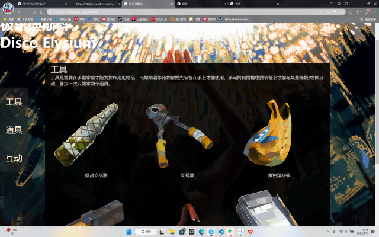
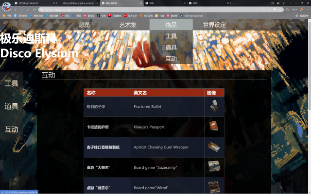
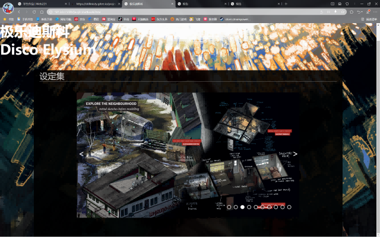

网站内容
主要技术与内容：

使用grid布局对实现了物品的排序

使用css实现了表格的排序
使用css实现了二级菜单的实现

使用js简单实现了图片的点播
遇到的的问题：
对于js几乎一无所知，反复看了好几个与图片点播的教学视频与文章，失败了很多次，最后参考了
http://t.csdn.cn/CjV53的方法才成功，以及这个游戏内容过多，加上自己的拖延症，导致非常多的东西我并没有做出来，只能做成目前这样的小学生水平了
我想有，但没有Orz
最终结果与讨论：
自我评价：如果让我给自己打分的化我会给自己打个6分及格分吧，还是拖延症太严重了，加上自主学习效率实在是太差，看到别人网页不禁感慨与他人的差距之大，不管怎么说还算是完成了作业，为自己4天的心血打个6分及格分吧（虽然说这种水平花费四天还是挺搞笑的）。
总结：菜就多学多做，另外只看不上手毫无作用，同理只写不思考也几乎没作用。
展望：总的来说web课是我大一上学期学的最有意思的课，但显然我并没有因此付出更多的努力，不过我还是从这次作业中学到不少的，另外我还是非常喜欢辜老师的课的，有机会的话我可能会继续选辜老师的课